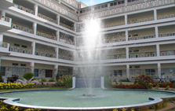

ABOUT US
Ahmed Public School was established in August 1987 to meet a growing demand for quality Cambridge International Examinations (Advanced Level) education. We started as a small school with 30 students and 12 teachers and have slowly grown to a school of over 750 students and 82 teachers and counselors. Our priority has been to admit a select group of students who are nurtured by a faculty that shares our goals of fostering curiosity, individual initiative, creative thinking and a sensitivity toward social concerns. In pursuing our goals we at the Lyceum seek to create an environment that enables students to realize their potential both as scholars and as members of society.
Ahmed Public School offers its students a comprehensive selection of Advanced Level subjects in three disciplines; Science, Social Science and Business.
OUR VISION
Ahmed Public School embraces value-based learning through the core principles of respect, integrity, compassion and accountability. It aims to provide each student a diverse and holistic education in a safe, supportive and nurturing environment that promotes self-discipline, motivation, and excellence in learning.
Our highly competitive academic environment challenges students to do their best as scholars while providing extra-curricular avenues for them to pursue other talents, passions and interests. We envision our students as future civic leaders and seek to inculcate in them practices that go beyond the mere following of rules and regulations and the observance of punctuality. Rather, we simultaneously endeavor to ensure that students consider the school environment as a microcosm of the larger community we live in and hence comport themselves with courtesy and kindness towards everyone along with an imbibed sense of humility and sensitivity towards social and cultural differences.
The fostering of these values among Lyceum students allows them to take independent initiatives and leadership roles once they graduate. Overall their training enables them to move forward on the path to become responsible adults who make meaningful contributions to society in an increasingly interdependent global community.
At Ahmed Public School we treat young people as individuals who will eventually play their role in society. Our philosophy incorporates the belief that education is primarily a preparation for life. We encourage parents and students to understand and embrace our mission prior to seeking admission to The Lyceum.